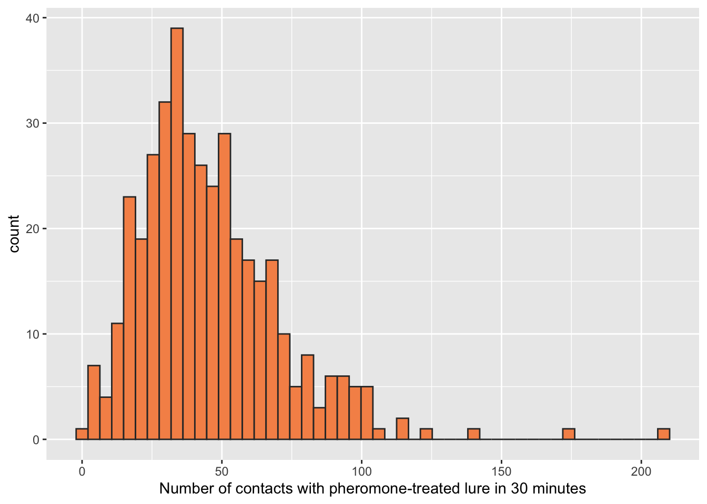
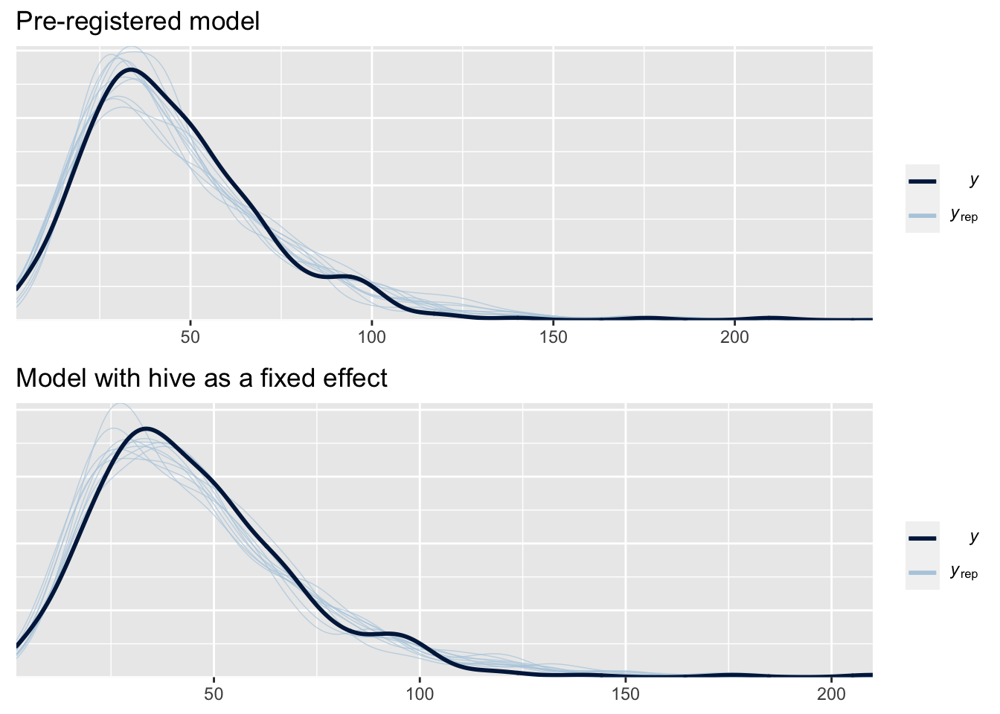
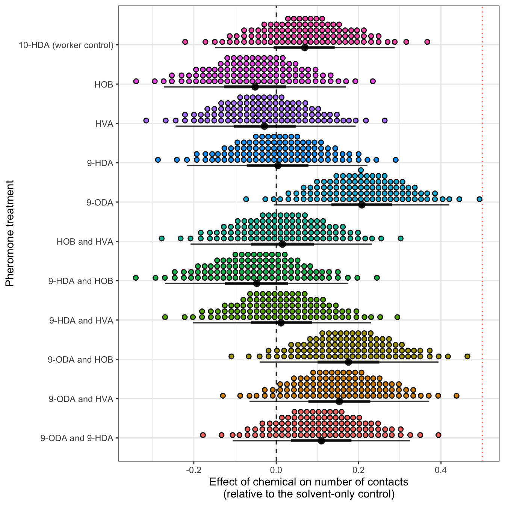

Last updated: 2020-03-11
Checks: 6 1
Knit directory: apis_retinue_expt/
This reproducible R Markdown analysis was created with workflowr (version 1.6.0). The Checks tab describes the reproducibility checks that were applied when the results were created. The Past versions tab lists the development history.
The R Markdown is untracked by Git. To know which version of the R Markdown file created these results, you’ll want to first commit it to the Git repo. If you’re still working on the analysis, you can ignore this warning. When you’re finished, you can run wflow_publish to commit the R Markdown file and build the HTML.
Great job! The global environment was empty. Objects defined in the global environment can affect the analysis in your R Markdown file in unknown ways. For reproduciblity it’s best to always run the code in an empty environment.
The command set.seed(20190828) was run prior to running the code in the R Markdown file. Setting a seed ensures that any results that rely on randomness, e.g. subsampling or permutations, are reproducible.
Great job! Recording the operating system, R version, and package versions is critical for reproducibility.
Nice! There were no cached chunks for this analysis, so you can be confident that you successfully produced the results during this run.
Great job! Using relative paths to the files within your workflowr project makes it easier to run your code on other machines.
Great! You are using Git for version control. Tracking code development and connecting the code version to the results is critical for reproducibility. The version displayed above was the version of the Git repository at the time these results were generated.
Note that you need to be careful to ensure that all relevant files for the analysis have been committed to Git prior to generating the results (you can use wflow_publish or wflow_git_commit). workflowr only checks the R Markdown file, but you know if there are other scripts or data files that it depends on. Below is the status of the Git repository when the results were generated:
Ignored files:
Ignored: .DS_Store
Ignored: .Rhistory
Ignored: .Rproj.user/
Ignored: Figures and tables.docx
Ignored: data/.DS_Store
Ignored: data/behaviour_data_OLDER_VERSION.csv
Ignored: data/raw_blinded_behaviour_data_OLD_VERSION.csv
Ignored: output/hive_as_fixed_effect_model.rds
Ignored: output/model_comparison_table_count_brms.rds
Ignored: output/model_comparison_table_duration_brms.rds
Ignored: output/model_selection_table.rds
Ignored: output/model_selection_table_count_glmmTMB.rds
Ignored: output/model_selection_table_duration_glmmTMB.rds
Ignored: output/model_weights_random_slope.rds
Ignored: output/multivariate_brms.rds
Ignored: output/pre_reg_model.rds
Ignored: output/top_10_model_formulae_count.rds
Ignored: output/top_10_model_formulae_duration.rds
Ignored: pheromone paper draft.docx
Ignored: ~$gures and tables.docx
Untracked files:
Untracked: analysis/preregistered_analysis.Rmd
Untracked: data/data_for_each_group_bees.csv
Untracked: data/metadata_for_each_dish_and_tray.csv
Unstaged changes:
Modified: .gitignore
Modified: analysis/clean_raw_data.Rmd
Modified: analysis/index.Rmd
Modified: analysis/statistics.Rmd
Modified: data/raw_blinded_behaviour_data.csv
Modified: data/unblinded_behaviour_data.csv
Note that any generated files, e.g. HTML, png, CSS, etc., are not included in this status report because it is ok for generated content to have uncommitted changes.
There are no past versions. Publish this analysis with wflow_publish() to start tracking its development.
The pre-registration for this study can be found at https://osf.io/ncf9z/. As well as outlining the experimental methods, the pre-registration included a plan for the statistical analysis, which we quote here:
We will conduct two separate analyses, one for the behavioural data and one for the ovary dissection data. The analyses will use generalised linear mixed models (GLMM) be implemented using the R package brms, using one of the following two model formulas (in the syntax of brms): Model 1:
Response_variable ~ Pheromone_treatment + (1 | Block) + (1 | Hive)or Model 2:Response_variable ~ Pheromone_treatment + (1 | Block) + (Pheromone_treatment | Hive)WherePheromone_treatmentis a 12-level fixed factor. Model 1 fits hive as a random intercept, which constrains all the hives to show the same response to queen pheromone, while the latter allows for a variable response between hives by additionally including treatment as a random slope. We will use cross-validation to determine which of these models provides a better fit, and then use that in subsequent analyses. The behavioural data represent counts of events, and so will probably be analysed using a GLMM with Poisson errors (or perhaps zero-inflated Poisson or negative binomial – to be decided based on which one provides the best fit, according to posterior predictive checks).
In this document, we follow these instructions to the letter. However, after writing the pre-registration and collecting the data, we thought of a better way to model the data (see LINK HERE), which forms the paper’s main analysis. In the interests of completeness and transparency we present the pre-registered analysis here as well; the conclusions are very similar to the main analysis.
library(tidyverse)
library(ggbeeswarm)
library(tidybayes)
library(brms)
library(gridExtra)
library(kableExtra)
library(bayestestR)
library(knitrhooks) # install with devtools::install_github("nathaneastwood/knitrhooks")
output_max_height() # a knitrhook option
options(stringsAsFactors = FALSE)
# Here are the treatments, ranked roughly from least to most like a queen bee
treatment_levels <-
# two "controls"
c("Solvent control", "10-HDA (worker control)",
# 4 individual queen-type chemicals
"HOB", "HVA", "9-HDA", "9-ODA",
# 6 pairwise combinations of two of the queen-type chemicals
"HOB and HVA",
"9-HDA and HOB", "9-HDA and HVA",
"9-ODA and HOB", "9-ODA and HVA", "9-ODA and 9-HDA")
# Load the behaviour data and rename the variables as in the pre-registration
# Also put the pheromone treatment levels in a biologically sensible order (not alphabetical)
behaviour_data <- read.csv("data/unblinded_behaviour_data.csv") %>%
as_tibble() %>%
rename(Pheromone_treatment = treatment,
Block = tray,
Hive = hive) %>%
mutate(Pheromone_treatment = factor(Pheromone_treatment, levels = treatment_levels))
# Finally, count up the number of times the bees in each dish touched the filter paper,
# so that we now have 1 observation for each Petri dish (number of touches in 30 minute-observation period)
summary_data <- behaviour_data %>%
group_by(Pheromone_treatment, Block, Hive, dish) %>%
summarise(Response_variable = n()) %>%
ungroup() %>%
arrange(Pheromone_treatment, Hive, Block) It does not look zero-inflated (as proposed in the pre-registration), though the right tail is longer than I would expect for a Poisson-distributed random variable. Therefore, it seems appropriate to select the negative binomial distribution, which has an additional free parameter for the variance, and so should be able to fit the data better.
ggplot(summary_data, aes(Response_variable)) +
geom_histogram(bins = 50, colour = "grey20", fill = "#f69256") +
xlab("Number of contacts with pheromone-treated lure in 30 minutes")
brmsHere, we run the model exactly as stated in the pre-registration. Note that the pre-registered model throws a warning about having 3 “divergent transitions”, meaning that problems (probably mild) were encountered during model fitting. The most likely reason is that the random effect Hive has only 3 levels, making the between-hive variance hard to estimate from these data.
Because this issue could not be resolved by increasing the sampling parameters adapt_delta and max_treedepth well above their defaults, we also fit an otherwise identical model in which Hive was treated as a fixed effect. Unlike the pre-registered version, this model runs very quickly (often a sign that the sampler is not struggling to fit the model) and it does not throw any errors, and we later show that the main conclusions are qualitatively identical, and quantitatively near-identical.
if(!file.exists("output/pre_reg_model.rds")){
priors <- c(prior(normal(0, 3), class = b))
pre_reg_model <- brm(
formula = Response_variable ~ Pheromone_treatment + (1 | Block) + (1 | Hive),
family = "negbinomial",
sample_prior = TRUE,
chains = 4, cores = 1, iter = 8000,
control = list(adapt_delta = 0.9999, max_treedepth = 14),
prior = priors,
data = summary_data)
pre_reg_with_random_slope <- brm(
formula = Response_variable ~ Pheromone_treatment + (1 | Block) + (Pheromone_treatment | Hive),
family = "negbinomial",
sample_prior = TRUE,
chains = 4, cores = 1, iter = 8000,
control = list(adapt_delta = 0.9999, max_treedepth = 14),
prior = priors,
data = summary_data)
model_weights_random_slope <- model_weights(pre_reg_model, pre_reg_with_random_slope, weights = "loo")
hive_as_fixed_effect_model <- brm(
formula = Response_variable ~ Pheromone_treatment + Hive + (1 | Block),
family = "negbinomial",
chains = 4, cores = 1, iter = 8000,
control = list(adapt_delta = 0.9999, max_treedepth = 14),
prior = priors,
data = summary_data)
saveRDS(hive_as_fixed_effect_model, file = "output/hive_as_fixed_effect_model.rds")
saveRDS(model_weights_random_slope, "output/model_weights_random_slope.rds")
saveRDS(pre_reg_model, file = "output/pre_reg_model.rds")
} else {
pre_reg_model <- readRDS("output/pre_reg_model.rds")
hive_as_fixed_effect_model <- readRDS("output/hive_as_fixed_effect_model.rds")
model_weights_random_slope <- readRDS("output/model_weights_random_slope.rds")
}The model formula named “Model 1” in the pre-registration had a better fit than the one named Model 2 (i.e. the simpler model lacking the random slope was preferred). The model weight of Model 1 was >99.999% (computed using “LOO”, or leave-one-out cross validation), indicating strong support over the more complex model.
model_weights_random_slope pre_reg_model pre_reg_with_random_slope
0.999966292 0.000033708
Here we perform a “posterior predictive check” on both models. The thick line shows the distribution of the real data, and the 10 thin blue lines show the distribution of fitted values for 10 random draws from the posterior. Both models look fine: the fitted values recapitulate the orignal data well, which is a necessary condition for the model to produce useful inferences.
grid.arrange(
pp_check(pre_reg_model) + labs(title = "Pre-registered model"),
pp_check(hive_as_fixed_effect_model) + labs(title = "Model with hive as a fixed effect"))
Click the tabs to compare the results for the model that was pre-registered, and the modified one that treated hive as a fixed effect to improve fit. The results are almost identical.
pvalues <- as.data.frame(p_direction(pre_reg_model)) %>%
mutate(Parameter = str_remove_all(Parameter, "b_"),
Parameter = str_replace_all(Parameter, "[.]", ":"),
p = 1- pd) %>% select(Parameter, p) %>% distinct()
fixed_effects <- fixef(pre_reg_model) %>%
as.data.frame() %>%
rownames_to_column("Parameter") %>%
mutate(old_names = Parameter) %>%
left_join(pvalues, by = "Parameter") %>%
mutate(` ` = ifelse(p < 0.05, "\\*", ""),
` ` = replace(` `, p > 0.05 & p < 0.1, "~"),
` ` = replace(` `, p < 0.01, "**"),
` ` = replace(` `, p < 0.001, "***"),
Parameter = str_replace_all(Parameter, "Pheromone_treatment", ""),
Parameter = str_replace_all(Parameter, "M", "-"),
Parameter = str_replace_all(Parameter, "and", " and "),
Parameter = str_replace_all(Parameter, "workercontrol", " (worker control)")) %>%
mutate_at(vars(-Parameter, - ` `, - old_names), ~ round(.x, 3))
fixed_effects %>% select(-old_names) %>%
kable() %>% kable_styling(full_width = FALSE)| Parameter | Estimate | Est.Error | Q2.5 | Q97.5 | p | |
|---|---|---|---|---|---|---|
| Intercept | 3.724 | 0.757 | 2.228 | 5.234 | 0.002 | ** |
| 10-HDA (worker control) | 0.071 | 0.109 | -0.142 | 0.283 | 0.260 | |
| HOB | -0.049 | 0.111 | -0.270 | 0.168 | 0.326 | |
| HVA | -0.025 | 0.110 | -0.242 | 0.189 | 0.412 | |
| 9-HDA | 0.006 | 0.111 | -0.211 | 0.220 | 0.476 | |
| 9-ODA | 0.211 | 0.108 | -0.002 | 0.422 | 0.026 | * |
| HOB and HVA | 0.017 | 0.112 | -0.200 | 0.234 | 0.437 | |
| 9-HDA and HOB | -0.045 | 0.114 | -0.272 | 0.178 | 0.348 | |
| 9-HDA and HVA | 0.016 | 0.109 | -0.198 | 0.230 | 0.444 | |
| 9-ODA and HOB | 0.179 | 0.112 | -0.040 | 0.399 | 0.055 | ~ |
| 9-ODA and HVA | 0.155 | 0.108 | -0.060 | 0.370 | 0.076 | ~ |
| 9-ODA and 9-HDA | 0.111 | 0.109 | -0.102 | 0.323 | 0.154 |
pvalues <- as.data.frame(p_direction(hive_as_fixed_effect_model)) %>%
mutate(Parameter = str_remove_all(Parameter, "b_"),
Parameter = str_replace_all(Parameter, "[.]", ":"),
p = 1- pd) %>% select(Parameter, p) %>% distinct()
fixed_effects <- fixef(hive_as_fixed_effect_model) %>%
as.data.frame() %>%
rownames_to_column("Parameter") %>%
mutate(old_names = Parameter) %>%
left_join(pvalues, by = "Parameter") %>%
mutate(` ` = ifelse(p < 0.05, "\\*", ""),
` ` = replace(` `, p > 0.05 & p < 0.1, "~"),
` ` = replace(` `, p < 0.01, "**"),
` ` = replace(` `, p < 0.001, "***"),
Parameter = str_replace_all(Parameter, "Pheromone_treatment", ""),
Parameter = str_replace_all(Parameter, "M", "-"),
Parameter = str_replace_all(Parameter, "and", " and "),
Parameter = str_replace_all(Parameter, "workercontrol", " (worker control)"),
Parameter = str_replace_all(Parameter, "Hive", "Hive: ")) %>%
mutate_at(vars(-Parameter, - ` `, - old_names), ~ round(.x, 3))
fixed_effects %>% select(-old_names) %>%
kable() %>% kable_styling(full_width = FALSE)| Parameter | Estimate | Est.Error | Q2.5 | Q97.5 | p | |
|---|---|---|---|---|---|---|
| Intercept | 3.412 | 0.111 | 3.194 | 3.630 | 0.000 | *** |
| 10-HDA (worker control) | 0.068 | 0.111 | -0.149 | 0.288 | 0.267 | |
| HOB | -0.052 | 0.113 | -0.273 | 0.169 | 0.325 | |
| HVA | -0.027 | 0.112 | -0.244 | 0.193 | 0.400 | |
| 9-HDA | 0.003 | 0.112 | -0.217 | 0.222 | 0.485 | |
| 9-ODA | 0.208 | 0.108 | -0.006 | 0.420 | 0.028 | * |
| HOB and HVA | 0.014 | 0.113 | -0.208 | 0.233 | 0.450 | |
| 9-HDA and HOB | -0.048 | 0.113 | -0.270 | 0.174 | 0.340 | |
| 9-HDA and HVA | 0.012 | 0.110 | -0.202 | 0.230 | 0.459 | |
| 9-ODA and HOB | 0.176 | 0.112 | -0.040 | 0.394 | 0.058 | ~ |
| 9-ODA and HVA | 0.153 | 0.110 | -0.065 | 0.370 | 0.080 | ~ |
| 9-ODA and 9-HDA | 0.110 | 0.110 | -0.106 | 0.325 | 0.157 | |
| Hive: Skylab | 0.410 | 0.129 | 0.154 | 0.663 | 0.001 | ** |
| Hive: Zoology | 0.524 | 0.117 | 0.291 | 0.752 | 0.000 | *** |
brmsFor completeness, here is the complete output from the summary method for the model fitted with brms. The table shows the random effects, which are missing in the previous table.
summary(pre_reg_model)Warning: There were 11 divergent transitions after warmup. Increasing
adapt_delta above 0.9999 may help. See http://mc-stan.org/misc/
warnings.html#divergent-transitions-after-warmup Family: negbinomial
Links: mu = log; shape = identity
Formula: Response_variable ~ Pheromone_treatment + (1 | Block) + (1 | Hive)
Data: summary_data (Number of observations: 394)
Samples: 4 chains, each with iter = 8000; warmup = 4000; thin = 1;
total post-warmup samples = 16000
Group-Level Effects:
~Block (Number of levels: 35)
Estimate Est.Error l-95% CI u-95% CI Rhat Bulk_ESS Tail_ESS
sd(Intercept) 0.26 0.04 0.19 0.36 1.00 5019 7676
~Hive (Number of levels: 3)
Estimate Est.Error l-95% CI u-95% CI Rhat Bulk_ESS Tail_ESS
sd(Intercept) 0.96 1.27 0.14 4.49 1.00 2714 3505
Population-Level Effects:
Estimate Est.Error l-95% CI u-95% CI
Intercept 3.72 0.76 2.23 5.23
Pheromone_treatment10MHDAworkercontrol 0.07 0.11 -0.14 0.28
Pheromone_treatmentHOB -0.05 0.11 -0.27 0.17
Pheromone_treatmentHVA -0.03 0.11 -0.24 0.19
Pheromone_treatment9MHDA 0.01 0.11 -0.21 0.22
Pheromone_treatment9MODA 0.21 0.11 -0.00 0.42
Pheromone_treatmentHOBandHVA 0.02 0.11 -0.20 0.23
Pheromone_treatment9MHDAandHOB -0.05 0.11 -0.27 0.18
Pheromone_treatment9MHDAandHVA 0.02 0.11 -0.20 0.23
Pheromone_treatment9MODAandHOB 0.18 0.11 -0.04 0.40
Pheromone_treatment9MODAandHVA 0.15 0.11 -0.06 0.37
Pheromone_treatment9MODAand9MHDA 0.11 0.11 -0.10 0.32
Rhat Bulk_ESS Tail_ESS
Intercept 1.00 3496 3198
Pheromone_treatment10MHDAworkercontrol 1.00 4605 8118
Pheromone_treatmentHOB 1.00 4747 8393
Pheromone_treatmentHVA 1.00 4781 8199
Pheromone_treatment9MHDA 1.00 4514 8147
Pheromone_treatment9MODA 1.00 4484 7613
Pheromone_treatmentHOBandHVA 1.00 4790 7422
Pheromone_treatment9MHDAandHOB 1.00 4924 8247
Pheromone_treatment9MHDAandHVA 1.00 4599 8070
Pheromone_treatment9MODAandHOB 1.00 4708 8043
Pheromone_treatment9MODAandHVA 1.00 4483 7857
Pheromone_treatment9MODAand9MHDA 1.00 4637 8399
Family Specific Parameters:
Estimate Est.Error l-95% CI u-95% CI Rhat Bulk_ESS Tail_ESS
shape 5.61 0.48 4.72 6.59 1.00 15118 11257
Samples were drawn using sampling(NUTS). For each parameter, Bulk_ESS
and Tail_ESS are effective sample size measures, and Rhat is the potential
scale reduction factor on split chains (at convergence, Rhat = 1).
summary(hive_as_fixed_effect_model) Family: negbinomial
Links: mu = log; shape = identity
Formula: Response_variable ~ Pheromone_treatment + Hive + (1 | Block)
Data: summary_data (Number of observations: 394)
Samples: 4 chains, each with iter = 8000; warmup = 4000; thin = 1;
total post-warmup samples = 16000
Group-Level Effects:
~Block (Number of levels: 35)
Estimate Est.Error l-95% CI u-95% CI Rhat Bulk_ESS Tail_ESS
sd(Intercept) 0.26 0.04 0.19 0.36 1.00 4937 7556
Population-Level Effects:
Estimate Est.Error l-95% CI u-95% CI
Intercept 3.41 0.11 3.19 3.63
Pheromone_treatment10MHDAworkercontrol 0.07 0.11 -0.15 0.29
Pheromone_treatmentHOB -0.05 0.11 -0.27 0.17
Pheromone_treatmentHVA -0.03 0.11 -0.24 0.19
Pheromone_treatment9MHDA 0.00 0.11 -0.22 0.22
Pheromone_treatment9MODA 0.21 0.11 -0.01 0.42
Pheromone_treatmentHOBandHVA 0.01 0.11 -0.21 0.23
Pheromone_treatment9MHDAandHOB -0.05 0.11 -0.27 0.17
Pheromone_treatment9MHDAandHVA 0.01 0.11 -0.20 0.23
Pheromone_treatment9MODAandHOB 0.18 0.11 -0.04 0.39
Pheromone_treatment9MODAandHVA 0.15 0.11 -0.06 0.37
Pheromone_treatment9MODAand9MHDA 0.11 0.11 -0.11 0.33
HiveSkylab 0.41 0.13 0.15 0.66
HiveZoology 0.52 0.12 0.29 0.75
Rhat Bulk_ESS Tail_ESS
Intercept 1.00 4023 6553
Pheromone_treatment10MHDAworkercontrol 1.00 6185 10299
Pheromone_treatmentHOB 1.00 6542 9671
Pheromone_treatmentHVA 1.00 5927 8314
Pheromone_treatment9MHDA 1.00 6586 10288
Pheromone_treatment9MODA 1.00 6019 8853
Pheromone_treatmentHOBandHVA 1.00 6505 9633
Pheromone_treatment9MHDAandHOB 1.00 6426 9881
Pheromone_treatment9MHDAandHVA 1.00 6328 9642
Pheromone_treatment9MODAandHOB 1.00 6226 8837
Pheromone_treatment9MODAandHVA 1.00 6071 9024
Pheromone_treatment9MODAand9MHDA 1.00 6077 9124
HiveSkylab 1.00 5546 7851
HiveZoology 1.00 5327 7744
Family Specific Parameters:
Estimate Est.Error l-95% CI u-95% CI Rhat Bulk_ESS Tail_ESS
shape 5.62 0.48 4.72 6.60 1.00 17054 11656
Samples were drawn using sampling(NUTS). For each parameter, Bulk_ESS
and Tail_ESS are effective sample size measures, and Rhat is the potential
scale reduction factor on split chains (at convergence, Rhat = 1).
posterior_samples(pre_reg_model) %>%
as_tibble() %>%
select(contains("b_"), -contains("Intercept")) %>%
gather() %>%
mutate(key = str_remove_all(key, "b_")) %>%
left_join(fixed_effects %>% select(Parameter, old_names), by = c("key" = "old_names")) %>%
mutate(Parameter = factor(Parameter, rev(treatment_levels))) %>%
ggplot(aes(value, Parameter, fill = Parameter)) +
geom_vline(xintercept = 0, linetype = 2) +
geom_vline(xintercept = 0.5, linetype = 3, colour = "tomato") +
stat_dotsh(quantiles = 100, colour = "grey10") +
stat_pointintervalh(position = position_nudge(y = -0.07), .width = c(0.5, 0.95), alpha = 0.8) +
theme_bw() +
theme(legend.position = "none") +
ylab("Pheromone treatment") +
xlab("Effect of chemical on number of contacts\n(relative to the solvent-only control)")
Figure S1: The figure shows the posterior distribution for each chemical’s effect size, from the pre-registered model shown in Table XXX. The solvent-only control was used as the reference level, meaning that positive effect sizes indicate that the focal chemical was touched more times by worker bees than the solvent-only control, and negative effect sizes mean it was touched fewer times. Note that positive effect sizes are plausible for the 9-ODA treatment, as well as for some other treatments containing 9-ODA.
posterior_samples(hive_as_fixed_effect_model) %>%
as_tibble() %>%
select(contains("b_"), -contains("Intercept"), -contains("Hive")) %>%
gather() %>%
mutate(key = str_remove_all(key, "b_")) %>%
left_join(fixed_effects %>% select(Parameter, old_names), by = c("key" = "old_names")) %>%
mutate(Parameter = factor(Parameter, rev(treatment_levels))) %>%
ggplot(aes(value, Parameter, fill = Parameter)) +
geom_vline(xintercept = 0, linetype = 2) +
geom_vline(xintercept = 0.5, linetype = 3, colour = "tomato") +
stat_dotsh(quantiles = 100, colour = "grey10") +
stat_pointintervalh(position = position_nudge(y = -0.07), .width = c(0.5, 0.95), alpha = 0.8) +
theme_bw() +
theme(legend.position = "none") +
ylab("Pheromone treatment") +
xlab("Effect of chemical on number of contacts\n(relative to the solvent-only control)")
sessionInfo()R version 3.6.2 (2019-12-12) Platform: x86_64-apple-darwin15.6.0 (64-bit) Running under: macOS High Sierra 10.13.6 Matrix products: default BLAS: /Library/Frameworks/R.framework/Versions/3.6/Resources/lib/libRblas.0.dylib LAPACK: /Library/Frameworks/R.framework/Versions/3.6/Resources/lib/libRlapack.dylib locale: [1] en_AU.UTF-8/en_AU.UTF-8/en_AU.UTF-8/C/en_AU.UTF-8/en_AU.UTF-8 attached base packages: [1] stats graphics grDevices utils datasets methods base other attached packages: [1] knitrhooks_0.0.4 knitr_1.28 bayestestR_0.5.1 kableExtra_1.1.0 [5] gridExtra_2.3 brms_2.12.0 Rcpp_1.0.3 tidybayes_2.0.1 [9] ggbeeswarm_0.6.0 forcats_0.4.0 stringr_1.4.0 dplyr_0.8.4 [13] purrr_0.3.3 readr_1.3.1 tidyr_1.0.2 tibble_2.1.3 [17] ggplot2_3.3.0 tidyverse_1.3.0 loaded via a namespace (and not attached): [1] colorspace_1.4-1 ellipsis_0.3.0 ggridges_0.5.2 [4] rsconnect_0.8.16 rprojroot_1.3-2 markdown_1.1 [7] base64enc_0.1-3 fs_1.3.1 rstudioapi_0.11 [10] farver_2.0.3 rstan_2.19.2 svUnit_0.7-12 [13] DT_0.12 fansi_0.4.1 mvtnorm_1.0-12 [16] lubridate_1.7.4 xml2_1.2.2 bridgesampling_0.8-1 [19] shinythemes_1.1.2 bayesplot_1.7.1 jsonlite_1.6.1 [22] workflowr_1.6.0 broom_0.5.4 dbplyr_1.4.2 [25] shiny_1.4.0 compiler_3.6.2 httr_1.4.1 [28] backports_1.1.5 assertthat_0.2.1 Matrix_1.2-18 [31] fastmap_1.0.1 cli_2.0.1 later_1.0.0 [34] prettyunits_1.1.1 htmltools_0.4.0 tools_3.6.2 [37] igraph_1.2.4.2 coda_0.19-3 gtable_0.3.0 [40] glue_1.3.1 reshape2_1.4.3 cellranger_1.1.0 [43] vctrs_0.2.2 nlme_3.1-144 crosstalk_1.0.0 [46] insight_0.8.1 xfun_0.12 ps_1.3.0 [49] rvest_0.3.5 mime_0.9 miniUI_0.1.1.1 [52] lifecycle_0.1.0 gtools_3.8.1 zoo_1.8-7 [55] scales_1.1.0 colourpicker_1.0 hms_0.5.3 [58] promises_1.1.0 Brobdingnag_1.2-6 parallel_3.6.2 [61] inline_0.3.15 shinystan_2.5.0 yaml_2.2.1 [64] StanHeaders_2.21.0-1 loo_2.2.0 stringi_1.4.5 [67] highr_0.8 dygraphs_1.1.1.6 pkgbuild_1.0.6 [70] rlang_0.4.4 pkgconfig_2.0.3 matrixStats_0.55.0 [73] evaluate_0.14 lattice_0.20-38 labeling_0.3 [76] rstantools_2.0.0 htmlwidgets_1.5.1 processx_3.4.2 [79] tidyselect_1.0.0 plyr_1.8.5 magrittr_1.5 [82] R6_2.4.1 generics_0.0.2 DBI_1.1.0 [85] pillar_1.4.3 haven_2.2.0 withr_2.1.2 [88] xts_0.12-0 abind_1.4-5 modelr_0.1.5 [91] crayon_1.3.4 arrayhelpers_1.1-0 rmarkdown_2.1 [94] grid_3.6.2 readxl_1.3.1 callr_3.4.1 [97] git2r_0.26.1 threejs_0.3.3 webshot_0.5.2 [100] reprex_0.3.0 digest_0.6.23 xtable_1.8-4 [103] httpuv_1.5.2 stats4_3.6.2 munsell_0.5.0 [106] viridisLite_0.3.0 beeswarm_0.2.3 vipor_0.4.5 [109] shinyjs_1.1